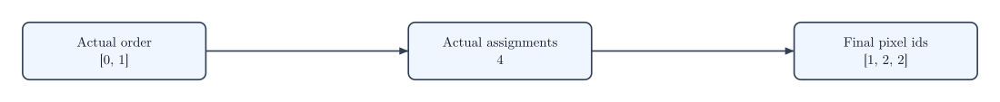
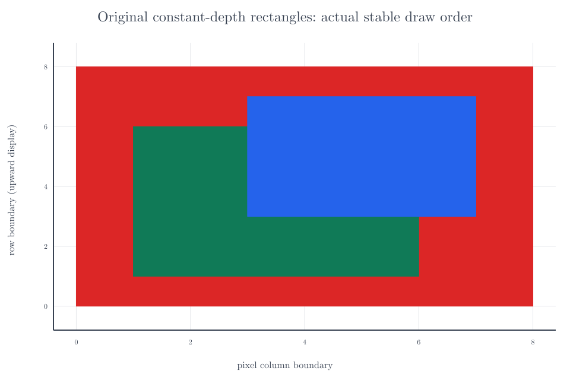
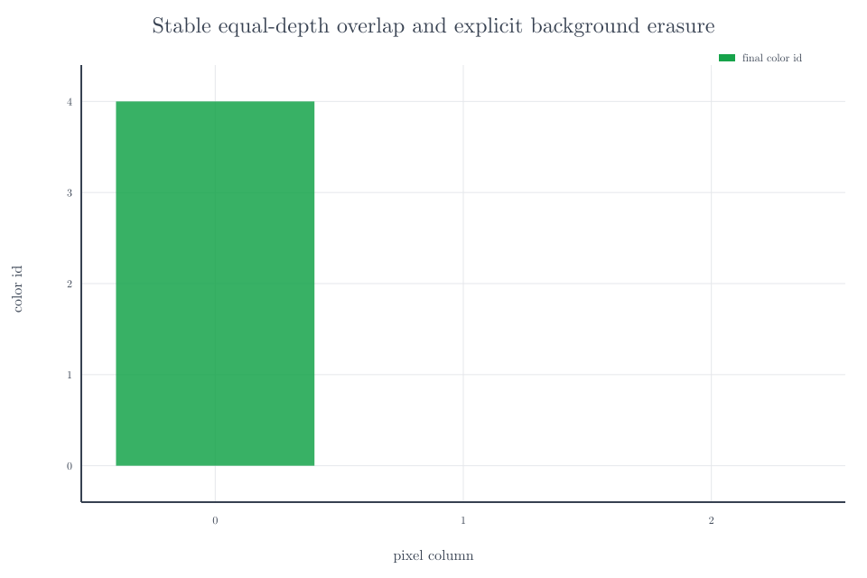
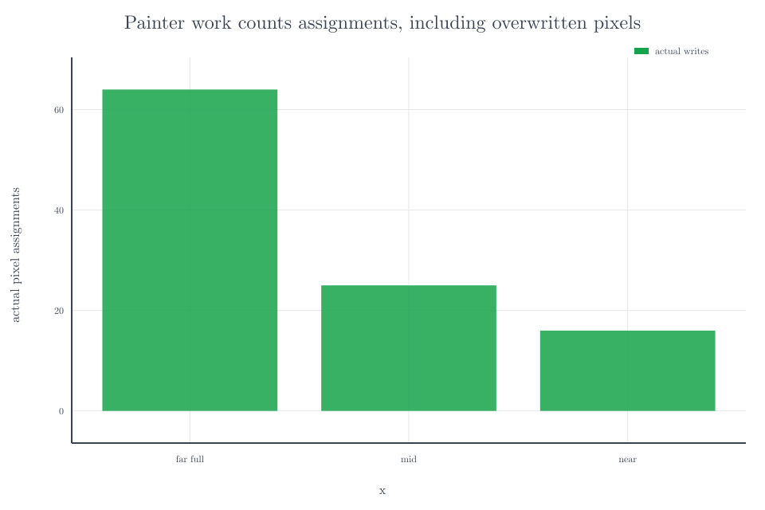

Painter overdraw: stable object depths
Abstract
A single depth key orders each complete rectangle; larger depths paint first. Inclusive bounds are clipped to the raster. Equal-depth objects retain input order, so the later object wins overlaps. This is a constant-depth rectangle demonstration: interpenetrating surfaces and cyclic polygon visibility require another representation. No external dataset is needed.
Mechanism and scope
A single depth key orders each complete rectangle; larger depths paint first. Inclusive bounds are clipped to the raster. Equal-depth objects retain input order, so the later object wins overlaps. This is a constant-depth rectangle demonstration: interpenetrating surfaces and cyclic polygon visibility require another representation. No external dataset is needed.
For a covered pixel, its final owner minimises the pair(depth,-input_index); the second component implements the documented equal-depth tie. Constant object depth is the restricted model, not a general polygon visibility solution.
A tiny actual producing history
The table and native diagram use the same producing run. Captured records own their values; the report does not reconstruct the algorithm.
#include <dm/dm.hpp>
int main() {
std::filesystem::create_directories("build");
auto t =
dm::algorithms::painter_trace({{0, 0, 1, 0, 3, 1}, {1, 0, 2, 0, 1, 2}},
3, 1);
std::print("| object | pixel | before | after |\n| ---: | --- | ---: | ---: |\n");
for (auto &r : t.writes)
std::print("| {} | ({},{}) | {} | {} |\n", r.object, r.x, r.y, r.before,
r.after);
dm::graphics::Diagram d;
d.node("n0", {0, 0}, std::format("Actual order\n{}", t.order));
d.node("n1", {8, 0}, std::format("Actual assignments\n{}", t.writes.size()));
d.node("n2", {16, 0}, std::format("Final pixel ids\n{}", t.raster[0]));
d.edge("n0", "n1").edge("n1", "n2");
d.save_svg("build/painters_algorithm_tiny.svg");
}| object | pixel | before | after |
|---|---|---|---|
| 0 | (0,0) | 0 | 1 |
| 0 | (1,0) | 0 | 1 |
| 1 | (1,0) | 1 | 2 |
| 1 | (2,0) | 0 | 2 |

The original fixture, retained
This complete program retains the original inputs, seed and substantive experiment. Any added display prefix is explicitly separate from the original random call schedule.
#include <dm/dm.hpp>
using namespace datamunge::algorithms;
using namespace datamunge::graphics;
int main() {
std::ostringstream original_output;
auto *original_cout = std::cout.rdbuf(original_output.rdbuf());
std::filesystem::create_directories("build");
std::vector<DepthRect> rects = {{0, 0, 7, 7, 10.0, 1}, // far (color 1) full background
{1, 1, 5, 5, 5.0, 2}, // mid (color 2)
{3, 3, 6, 6, 1.0, 3}}; // near (color 3)
std::vector<double> depths = {10.0, 5.0, 1.0};
auto order = painter_order(depths);
std::cout << "=== Draw order (farthest first) ===\n ";
for (int i : order)
std::cout << "obj" << i << "(depth " << depths[i] << ") ";
std::cout << "\n";
auto raster = painter_render(rects, 8, 8);
std::cout << "\n=== 8x8 raster (color id per pixel) ===\n";
for (const auto &row : raster) {
std::cout << " ";
for (int v : row)
std::cout << v << " ";
std::cout << "\n";
}
// Draw the three rectangles as filled polygons in back-to-front order.
RPlot p = RPlot::create();
RGB cols[4] = {{255, 255, 255}, {220, 38, 38}, {16, 122, 87}, {37, 99, 235}};
for (int idx : order) {
const DepthRect &r = rects[idx];
p.polygon({(double) r.x0, (double) r.x1 + 1, (double) r.x1 + 1,
(double) r.x0},
{(double) r.y0, (double) r.y0, (double) r.y1 + 1,
(double) r.y1 + 1}, cols[r.color], 1.0);
}
p.title("Original constant-depth rectangles: actual stable draw order").x_label("pixel column boundary").y_label("row boundary (upward display)");
p.save_svg("build/painters_algorithm_original.svg");
std::cout << "\nwrote build/painters_algorithm_original.svg\n";
std::cout.rdbuf(original_cout);
std::print("| Original computed output |\n| --- |\n");
std::istringstream lines(original_output.str());
std::string line;
while (std::getline(lines, line)) {
while (!line.empty() && line.back() == ' ') line.pop_back();
if (!line.empty()) std::print("| `{}` |\n", line);
}
return 0;
}| Original computed output |
|---|
=== Draw order (farthest first) === |
obj0(depth 10) obj1(depth 5) obj2(depth 1) |
=== 8x8 raster (color id per pixel) === |
1 1 1 1 1 1 1 1 |
1 2 2 2 2 2 1 1 |
1 2 2 2 2 2 1 1 |
1 2 2 3 3 3 3 1 |
1 2 2 3 3 3 3 1 |
1 2 2 3 3 3 3 1 |
1 1 1 3 3 3 3 1 |
1 1 1 1 1 1 1 1 |
wrote build/painters_algorithm_original.svg |

Controls and boundary cases
#include <dm/dm.hpp>
int main() {
std::filesystem::create_directories("build");
std::vector<dm::algorithms::DepthRect> r{{-2, 0, 1, 0, 1, 4},
{1, 0, 3, 0, 1, 0},
{3, 0, 2, 0, 0, 7}};
auto t = dm::algorithms::painter_trace(r, 3, 1);
std::print("Equal depths and background erasure: `{}`; actual writes {}.\n",
t.raster[0], t.writes.size());
auto p =
dm::graphics::RPlot::barplot(std::vector<double>(t.raster[0].begin(),
t.raster[0].end()),
{"0", "1", "2"}, "final color id");
p.title("Stable equal-depth overlap and explicit background erasure").x_label("pixel column").y_label("color id");
p.save_svg("build/painters_algorithm_controls.svg");
}Equal depths and background erasure: [4, 0, 0]; actual writes 4.

Producing work and finite observations
#include <dm/dm.hpp>
int main() {
std::filesystem::create_directories("build");
std::vector<dm::algorithms::DepthRect> r{{0, 0, 7, 7, 10, 1},
{1, 1, 5, 5, 5, 2},
{3, 3, 6, 6, 1, 3}};
auto t = dm::algorithms::painter_trace(r, 8, 8);
std::vector<double> v(r.size(), 0);
for (auto &w : t.writes)
++v[w.object];
std::print("| original object | actual pixel assignments |\n| ---: | ---: |\n");
for (std::size_t i = 0; i < v.size(); ++i)
std::print("| {} | {} |\n", i, v[i]);
auto p =
dm::graphics::RPlot::barplot(v, {"far full", "mid", "near"},
"actual writes");
p.title("Painter work counts assignments, including overwritten pixels").y_label("actual pixel assignments");
p.save_svg("build/painters_algorithm_work.svg");
}| original object | actual pixel assignments |
|---|---|
| 0 | 64 |
| 1 | 25 |
| 2 | 16 |

API and interpretation
All four blocks are complete editable C++ programs. Numerical tables retain raw native values; figures display only those returned records. Trace limits count documented logical records or scalar entries, not peak bytes or wall-clock work. Validation is complete before unchecked indexing; captured histories are educational owned storage. A returned result is interpreted under the algorithm-specific scope above, without a universal optimality, convergence or statistical-quality claim.
MIT visibility notes explain back-to-front drawing and why cycles require splitting; the native rectangle model is deliberately narrower.
Verification
This ten-report batch passes 89 CTest cases, 20 ASan/UBSan cases with all ten
producing families directly instrumented, 62 compiled and executed public
examples, 200/200 scoped file definitions plus 15/15 exact PCG class
definitions, and ten representative clangd hovers. Independent Python
hashlib/HMAC and arbitrary-integer PCG checks verify 75189 records with 123243
checks. Native independent per-pixel visibility, exhaustive prefix reversals,
quadratic LIS, integer perceptron updates, sampled-label tail counts and
exhaustive Boolean-cover checks supplement frozen valid-input comparisons for
all ten producers. Ten checkout and ten byte-identical installed development
headers compile independently; an installed-header native consumer links and
runs. All 40 complete programs execute; all 40 native figures have been visually
reviewed. HTML/Markdown exports preserve computed result rows and identical
image bytes. These are scoped native checks. Receipts:
build/mepml-conversion/batch-274-283/.